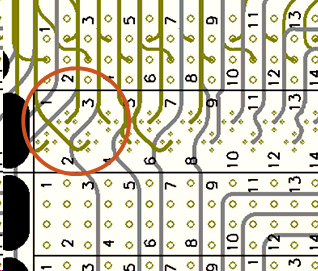
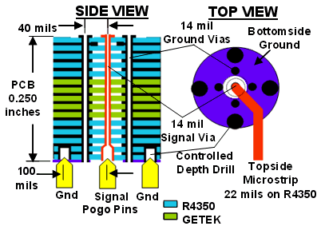

Ultra high-speed vias
The Pin Scale HX card Universal Access Board (UAB) features ultra high-speed vias. The figure below shows the layout of the pogo via. The reduced size of this via allows to route other signal traces in the space between the pogo vias.


Functional changes
- Introduced before SmarTest 6.3.2